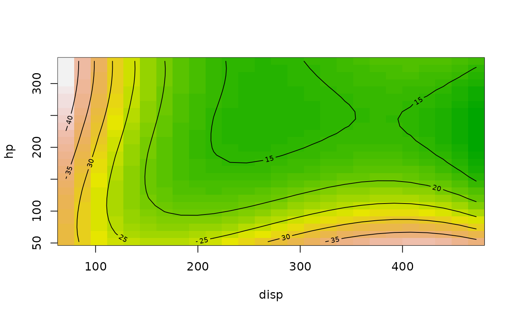
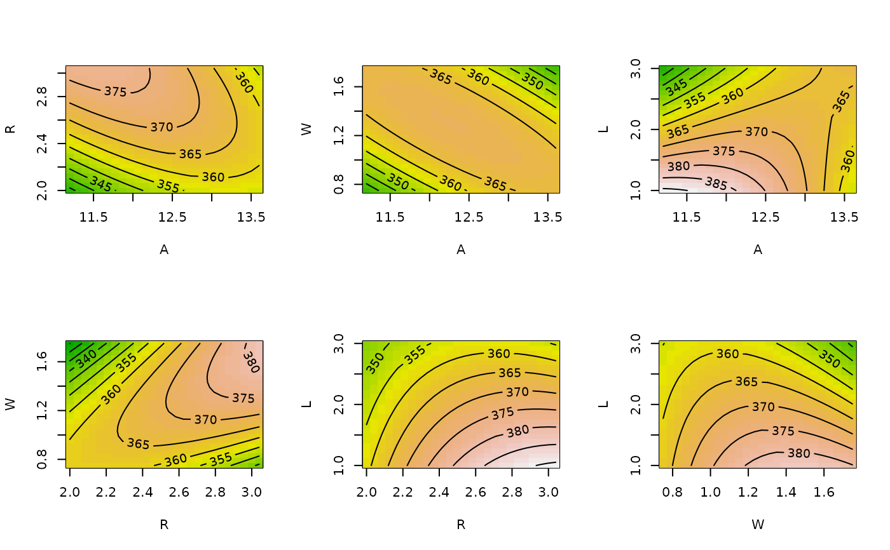
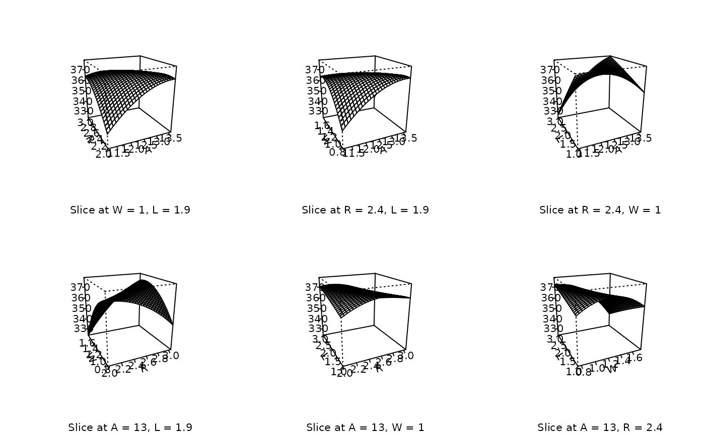
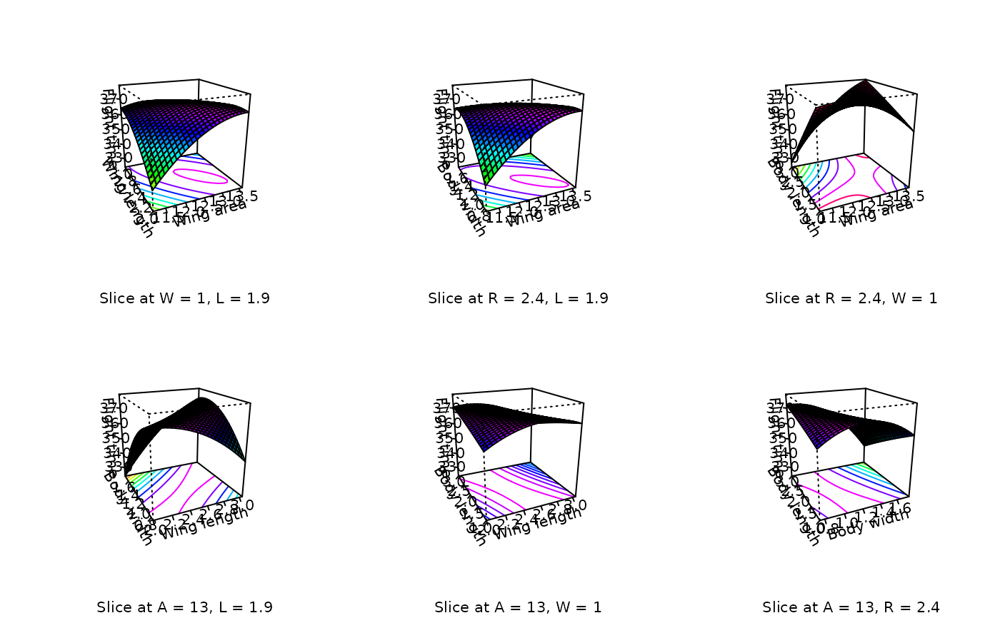

Surface plot(s) of a fitted linear model
contour.lm.Rdcontour, image, and persp methods that display the fitted surface for an lm object
involving two or more numerical predictors.
Usage
# S3 method for lm
contour(x, form, at, bounds, zlim, xlabs, hook,
plot.it = TRUE, atpos = 1, decode = TRUE, image = FALSE,
img.col = terrain.colors(50), ...)
# S3 method for lm
image(x, form, at, bounds, zlim, xlabs, hook,
atpos = 1, decode = TRUE, ...)
# S3 method for lm
persp(x, form, at, bounds, zlim, zlab, xlabs,
col = "white", contours = NULL, hook, atpos = 3, decode = TRUE,
theta = -25, phi = 20, r = 4, border = NULL, box = TRUE,
ticktype = "detailed", ...)Arguments
- x
A
lmobject.- form
A formula, or a list of formulas.
- at
Optional named list of fixed values to use for surface slices. For example, if the predictor variables are
x1,x2, andx3, the contour plot ofx2versusx1would be based on the fitted surface sliced at thex3value specified inat; the contour plot ofx3versusx1would be sliced at theatvalue forx2; etc. If not provided,atdefaults to the mean value of each numeric variable.- bounds
Optional named list of bounds or grid values to use for the variables having the same names. See details.
- zlim
zlimsetting passed to parent methodscontour,image, orpersp. The samezlimis used in all plots when several are produced. If not provided, the range of values across all plotted surfaces is used.- zlab
Optional label for the vertical axis.
- xlabs
Alternate labels for predictor axes (see Details).
- hook
Optional list that can contain functions
pre.plotandpost.plot. May be used to add annotations or to re-route the graphs to separate files (see Details).- atpos
Determines where
atvalues are displayed. A value of 1 (or 2) displays it as part of the x (or y) axis label. A value of 3 displays it as a subtitle below the plot. A value of 0 suppresses it. Any other nonzero value will cause the label to be generated but not displayed; it can be accessed via ahookfunction.- decode
This has an effect only if
xis anrsmobject or other model object that supportscoded.data. In such cases, ifdecodeisTRUE, the coordinate axes are transformed to their decoded values.- image
Set to
TRUEif you want an image plot overlaid by contours.- img.col
Color map to use when
image=TRUE.- plot.it
If
TRUE, no plot is produced, just the return value.- col
Color or colors used for facets in the perspective plot (see details).
- contours
If non-
NULL, specifications for added contour lines in perspective plot.- theta, phi
Viewing angles passed to
persp(different defaults).- r
Viewing distance passed to
persp(different default).- border, box
Options passed to
persp.- ticktype
Option passed to
persp(different default).- ...
Additional arguments passed to
contour,image, orpersp. Note, however, that aylabis ignored, with a message to Usexlabsinstead.
Details
form may be a single formula or a list of formulas. A simple formula like
x2 ~ x1 will produce a contour plot of the fitted regression surface
for combinations of x2 (vertical axis) and x1 (horizontal axis).
A list of several such simple formulas will produce a contour plot for each formula.
A two-sided formula produces contour plots for each left-hand variable versus each
right-hand variable (except when they are the same); for example,
x1+x3 ~ x2+x3 is equivalent to
list(x1~x2, x3~x2, x1~x3).
A one-sided formula produces contour plots for each pair of variables. For example,
~ x1+x2+x3 is equivalent to
list(x2~x1, x3~x1, x3~x2).
For any variables not in the bounds argument, a grid of 26 equally-spaced
values in the observed range of that variable is used. If you specify a vector of
length 2, it is interpreted as the desired range for that variable and a grid of 26
equally-spaced points is generated. If it is a vector of length 3, the first two elements are used
as the range, and the third as the number of grid points.
If it is a vector of length 4 or more, those
values are used directly as the grid values.
The results are based on the predicted values of the linear model over the specified grid. If there are factors among the predictors, the predictions are made over all levels (or combinations of levels) of those factors, and then averaged together. (However, the user may include factors in at to restrict this behavior.)
By default, the predictor axes are labeled using the variable names in form,
unless x is an rsm or other object that supports coded.data, in which case either the decoded variable names or the variable-coding formulas are used to generate axis labels, depending on whether decode is TRUE or FALSE.
These axis labels are replaced by the entries in xlabs if provided. One must be careful using this
to make sure that the names are mapped correctly. The entries in xlabs
should match the respective unique variable names in form, after sorting them in
(case-insensitive) alphabetical order (not necessarily in order of appearance). Note that if form is changed, it may also
be necessary to change xlabs.
Please note that with models fitted to coded data, coded values should be used in at or bounds, regardless of whether decode is TRUE or FALSE. However, any elements that are added afterward via points, lines, etc., must be specified in terms of whatever coordinate system is present in the plots.
In persp, contour lines may be added via the contours argument. It may be a boolean or character value, or a list.
If boolean and TRUE, default black contour lines are added to the bottom surface of the box. Character values of "top", "bottom"
add black contour lines to the specified surface of the box. contours = "colors" puts contour lines on the bottom using the same colors as those
at the same height on the surface. Other character values of contours are taken to be the desired color of the contour lines, plotted at the bottom.
If contours is a named list, its elements (all are optional) are used as follows:
zHeight where the contour lines are plotted. May be
"bottom"(default),"top", or a numeric value.colColor of the lines. If not specified, they will be black. May be integer color values, color names, or
"colors"to match the surface colors.lwdLine width; default is 1.
Since these functions often produce several plots, the hook argument is provided if special setups or annotations are needed for each plot. It
should be a list that defines one or both of the functions pre.plot and post.plot. Both of these functions have one argument, the character
vector labs for that plot (see Value documentation).
Additional examples and discussion of these plotting functions is available via vignette("rsm-plots").
Value
A list containing information that is plotted.
Each list item is itself a list with the following components:
- x, y
The values used for the x and y axes
- z
The matrix of fitted response values
- labs
Character vector of length 5: Elements 1 and 2 are the x and y axis labels, elements 3 and 4 are their original variable names, and element 5 is the slice label (empty if
atposis 0)- zlim
The computed or provided
zlimvalues- transf
(
persponly) The 3D transformation fortrans3d
References
Lenth RV (2009) ``Response-Surface Methods in R, Using rsm'', Journal of Statistical Software, 32(7), 1--17. doi:10.18637/jss.v032.i07
Examples
### Basic example with a linear model:
mpg.lm <- lm(mpg ~ poly(hp, disp, degree = 3), data = mtcars)
contour(mpg.lm, hp ~ disp, image = TRUE)

### Extended example with an rsm model...
heli.rsm <- rsm (ave ~ block + SO(x1, x2, x3, x4), data = heli)
# Plain contour plots
par (mfrow = c(2,3))
contour (heli.rsm, ~x1+x2+x3+x4, at = xs(heli.rsm))
# Same but with image overlay, slices at origin and block 2,
# and no slice labeling
contour (heli.rsm, ~x1+x2+x3+x4, at = list(block="2"),
atpos = 0, image = TRUE)

# Default perspective views
persp (heli.rsm, ~x1+x2+x3+x4, at = xs(heli.rsm))

# Same plots, souped-up with facet coloring and axis labeling
persp (heli.rsm, ~x1+x2+x3+x4, at = xs(heli.rsm),
contours = "col", col = rainbow(40), zlab = "Flight time",
xlabs = c("Wing area", "Wing length", "Body width", "Body length"))

if (FALSE) {
### Hints for creating graphics files for use in publications...
# Save perspective plots in one PDF file (will be six pages long)
pdf(file = "heli-plots.pdf")
persp (heli.rsm, ~x1+x2+x3+x4, at = xs(heli.rsm))
dev.off()
# Save perspective plots in six separate PNG files
png.hook = list(
pre.plot = function(lab)
png(file = paste(lab[3], lab[4], ".png", sep = "")),
post.plot = function(lab)
dev.off())
persp (heli.rsm, ~x1+x2+x3+x4, at = xs(heli.rsm), hook = png.hook)
}